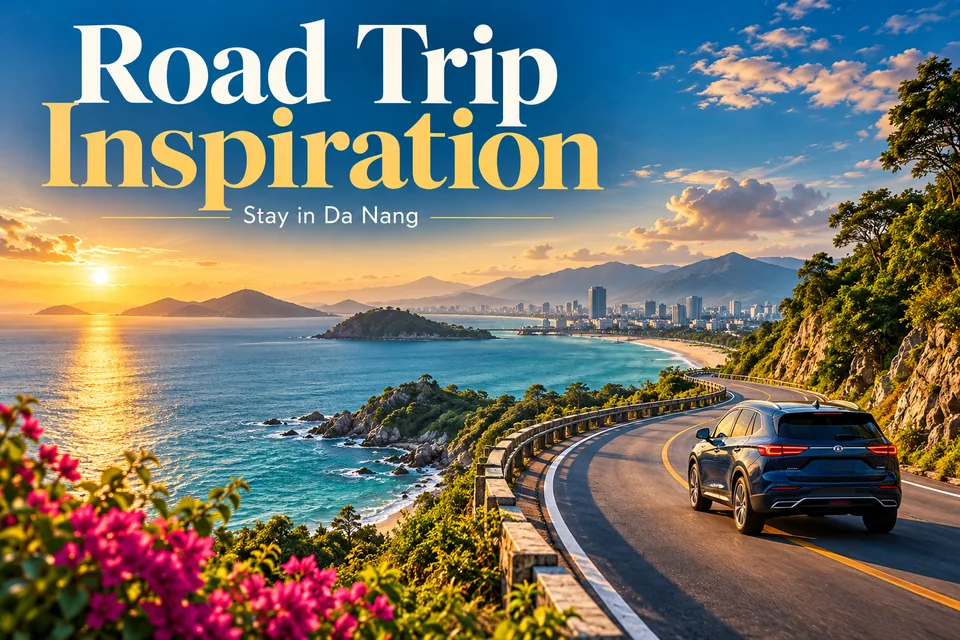

Road Trip Inspiration · Советы
Практичные путеводители по Вьетнаму: маршруты, районы отелей и объекты наследия.

Открыть / скачать HD · PNG →WebP →


Planning idea · English
Central Vietnam has beautiful coastal roads and mountain scenery. Choose a suitable transport option and plan rest stops and travel times carefully. Distinguish self-drive from chauffeur services and check documents, insurance, fuel, deposits and return location. Plan breaks and never drive while tired.
Советы
Здесь описаны реальные места и общие советы, а не личный отзыв или предложение с актуальной ценой. Перед поездкой уточните правила въезда, погоду, часы работы, наличие мест и цены у официальных источников или поставщика.